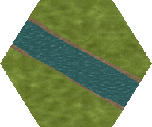

Connected terrain: roads, streams, paths, rail, trenches, bridges and crossings 16 new road variants, 11 stream variants, 14 narrow earth paths, 12 rail variants, 12 trench variants, five bridges and four crossings, using newly authored materials. Smooth feature edges, rounded stream junctions and matching protected connections. Roads have no painted lane markings.
Review and reproduction · Source/material gallery · Build manifest · Full local 108-patch gallery (rebuild if absent)
Provisional candidates. Tested with pixel-aligned 2×/4× exported PNG assembly. Full-map/zoom integration, seasonal transitions and release acceptance remain open.
Actual exported PNGs assembled into seven-hex patches All variants
road13 · ports 1, 3 road14 · ports 1, 4 road15 · ports 1, 5 road25 · ports 2, 5 road35 · ports 3, 5 road36 · ports 3, 6 road46 · ports 4, 6 road26 · ports 2, 6 road125 · ports 1, 2, 5 road124 · ports 1, 2, 4 road145 · ports 1, 4, 5 road236 · ports 2, 3, 6 road346 · ports 3, 4, 6 road356 · ports 3, 5, 6 road135 · ports 1, 3, 5 road24 · ports 2, 4 stream13 · ports 1, 3 stream135 · ports 1, 3, 5 stream14 · ports 1, 4 stream15 · ports 1, 5 stream24 · ports 2, 4 stream246 · ports 2, 4, 6 stream25 · ports 2, 5 
2× composite · 192×160 4× overlay · 384×320 · 2× overlay stream26 · ports 2, 6 2× composite · 192×160 4× overlay · 384×320 · 2× overlay stream35 · ports 3, 5 2× composite · 192×160 4× overlay · 384×320 · 2× overlay stream36 · ports 3, 6 2× composite · 192×160 4× overlay · 384×320 · 2× overlay stream46 · ports 4, 6 2× composite · 192×160 4× overlay · 384×320 · 2× overlay New narrow earth paths Reviewed organic interiors, rounded junctions and protected matching ports. Batch review · Path manifest · Full local 56-patch gallery (rebuild if absent) .
path14-patch-parity0.png path13-patch-parity1.png path135-patch-parity0.png path136-patch-parity1.png path125 · ports 1, 2, 5 2× composite · 192×160 4× overlay · 384×320 · 2× overlay path13 · ports 1, 3 2× composite · 192×160 4× overlay · 384×320 · 2× overlay path135 · ports 1, 3, 5 2× composite · 192×160 4× overlay · 384×320 · 2× overlay path136 · ports 1, 3, 6 2× composite · 192×160 4× overlay · 384×320 · 2× overlay path14 · ports 1, 4 2× composite · 192×160 4× overlay · 384×320 · 2× overlay path15 · ports 1, 5 2× composite · 192×160 4× overlay · 384×320 · 2× overlay path24 · ports 2, 4 2× composite · 192×160 4× overlay · 384×320 · 2× overlay path25 · ports 2, 5 2× composite · 192×160 4× overlay · 384×320 · 2× overlay path26 · ports 2, 6 2× composite · 192×160 4× overlay · 384×320 · 2× overlay path346 · ports 3, 4, 6 2× composite · 192×160 4× overlay · 384×320 · 2× overlay path35 · ports 3, 5 2× composite · 192×160 4× overlay · 384×320 · 2× overlay path356 · ports 3, 5, 6 2× composite · 192×160 4× overlay · 384×320 · 2× overlay path36 · ports 3, 6 2× composite · 192×160 4× overlay · 384×320 · 2× overlay path46 · ports 4, 6 2× composite · 192×160 4× overlay · 384×320 · 2× overlay New railway tracks Paired steel rails, weathered timber sleepers and stone ballast, with matching port connections and sleeper spacing. Batch review · Rail manifest · Full local 48-patch gallery (rebuild if absent) .
rail14-patch-parity0.png rail13-patch-parity1.png rail236-patch-parity0.png rail346-patch-parity1.png rail13 · ports 1, 3 2× composite · 192×160 4× overlay · 384×320 · 2× overlay rail14 · ports 1, 4 2× composite · 192×160 4× overlay · 384×320 · 2× overlay rail15 · ports 1, 5 2× composite · 192×160 4× overlay · 384×320 · 2× overlay rail236 · ports 2, 3, 6 2× composite · 192×160 4× overlay · 384×320 · 2× overlay rail24 · ports 2, 4 2× composite · 192×160 4× overlay · 384×320 · 2× overlay rail25 · ports 2, 5 2× composite · 192×160 4× overlay · 384×320 · 2× overlay rail26 · ports 2, 6 2× composite · 192×160 4× overlay · 384×320 · 2× overlay rail346 · ports 3, 4, 6 2× composite · 192×160 4× overlay · 384×320 · 2× overlay rail35 · ports 3, 5 2× composite · 192×160 4× overlay · 384×320 · 2× overlay rail356 · ports 3, 5, 6 2× composite · 192×160 4× overlay · 384×320 · 2× overlay rail36 · ports 3, 6 2× composite · 192×160 4× overlay · 384×320 · 2× overlay rail46 · ports 4, 6 2× composite · 192×160 4× overlay · 384×320 · 2× overlay New excavated trenches Open channels, closed ring, contained blind spurs and distinct dugout rooms. Batch review · Trench manifest · Full local 48-patch gallery (rebuild if absent) .
trench0-patch-parity0.png trench14-patch-parity1.png trench124-patch-parity0.png trench5a-patch-parity1.png trench0 · closed ring 2× composite · 192×160 4× overlay · 384×320 · 2× overlay trench1 · ports 1 2× composite · 192×160 4× overlay · 384×320 · 2× overlay trench12 · ports 1, 2; dugout 5 2× composite · 192×160 4× overlay · 384×320 · 2× overlay trench124 · ports 1, 2, 4; dugout 5 2× composite · 192×160 4× overlay · 384×320 · 2× overlay trench125 · ports 1, 2, 5; dugout 4 2× composite · 192×160 4× overlay · 384×320 · 2× overlay trench14 · ports 1, 4 2× composite · 192×160 4× overlay · 384×320 · 2× overlay trench15 · ports 1, 5; blind spurs 3; dugout 4 2× composite · 192×160 4× overlay · 384×320 · 2× overlay trench24 · ports 2, 4; dugout 5 2× composite · 192×160 4× overlay · 384×320 · 2× overlay trench25 · ports 2, 5 2× composite · 192×160 4× overlay · 384×320 · 2× overlay trench4 · ports 4 2× composite · 192×160 4× overlay · 384×320 · 2× overlay trench5 · ports 5 2× composite · 192×160 4× overlay · 384×320 · 2× overlay trench5a · ports 5; blind spurs 1, 3; dugout 4 2× composite · 192×160 4× overlay · 384×320 · 2× overlay Timber bridges and level crossings All nine remaining enabled infrastructure IDs. Finite road bridges retain separate upper road/path/rail layers; footbridges include path approaches. Crossing rails remain continuous over fitted timber. Batch review · Mixed manifest · Full local64-patch gallery (rebuild if absent) .
bridge25-patch-parity0.png bridge36-patch-parity1.png rbridge14-patch-parity0.png rbridge25-patch-parity1.png rbridge36-patch-parity0.png cross1-patch-parity1.png cross2-patch-parity0.png cross3-patch-parity1.png cross4-patch-parity0.png campaign-rbridge36-stream14-path36-patch-parity0.png campaign-rbridge36-stream25-rail36-patch-parity1.png bridge25 · footbridge path:2|5
2× composite ·192×160 4× overlay ·384×320 · 2× overlay bridge36 · footbridge path:3|6
2× composite ·192×160 4× overlay ·384×320 · 2× overlay rBridge14 · road-bridge traversal:1|4;overlay:none
2× composite ·192×160 4× overlay ·384×320 · 2× overlay rBridge25 · road-bridge traversal:2|5;overlay:none
2× composite ·192×160 4× overlay ·384×320 · 2× overlay rBridge36 · road-bridge traversal:3|6;overlay:none
2× composite ·192×160 4× overlay ·384×320 · 2× overlay cross1 · crossing path:1|4;rail:3|6
2× composite ·192×160 4× overlay ·384×320 · 2× overlay cross2 · crossing road:1|4;rail:3|6
2× composite ·192×160 4× overlay ·384×320 · 2× overlay cross3 · crossing road:2|5;rail:3|6
2× composite ·192×160 4× overlay ·384×320 · 2× overlay cross4 · crossing path:3|6;rail:1|4
2× composite ·192×160 4× overlay ·384×320 · 2× overlay